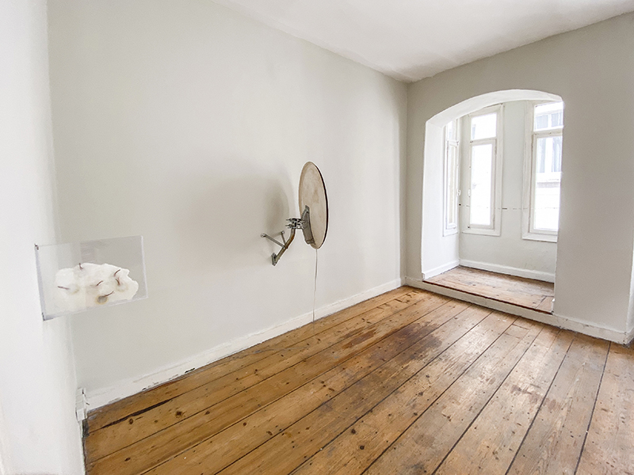
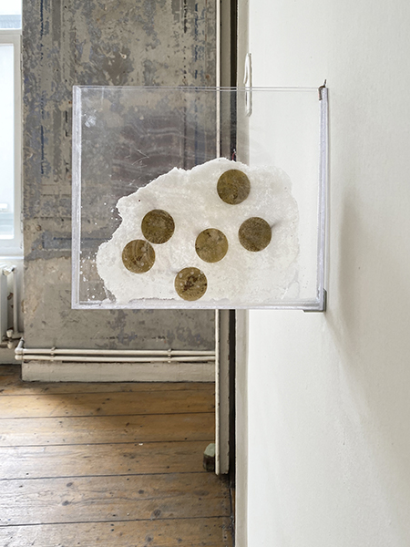
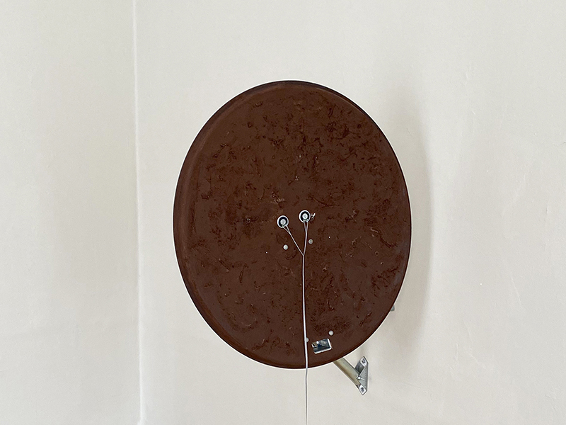
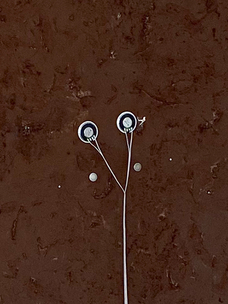
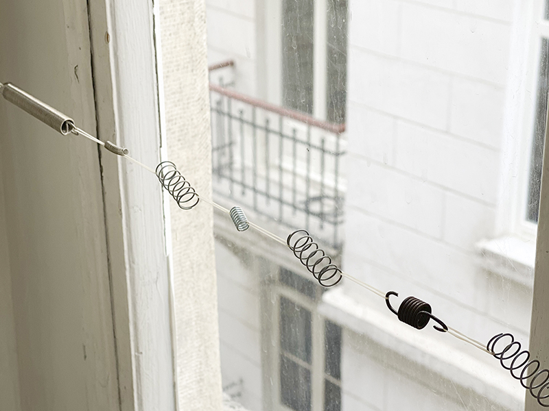
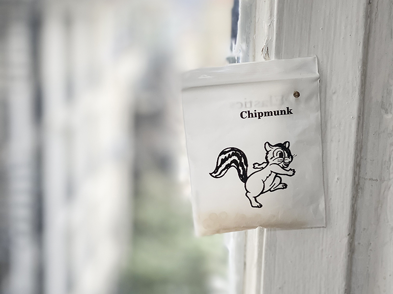
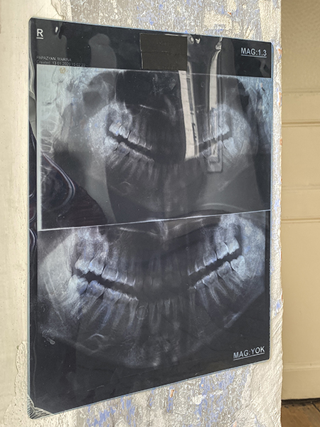
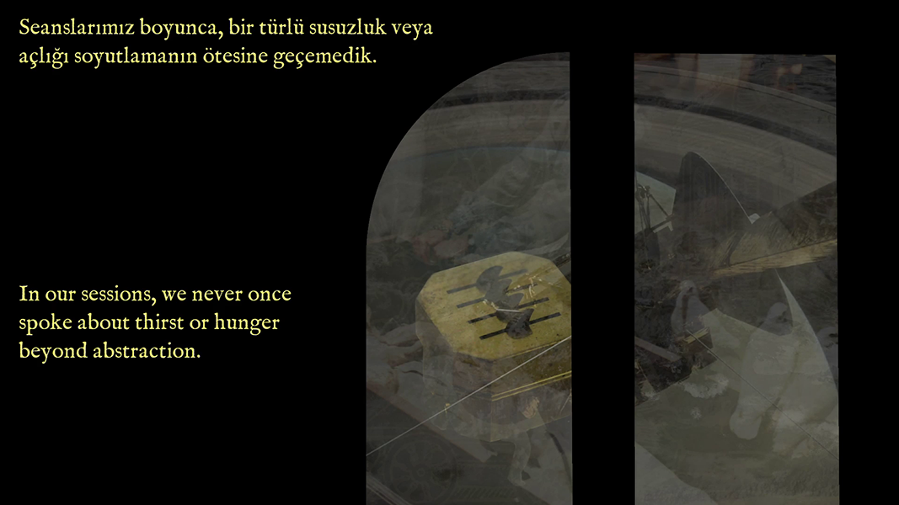
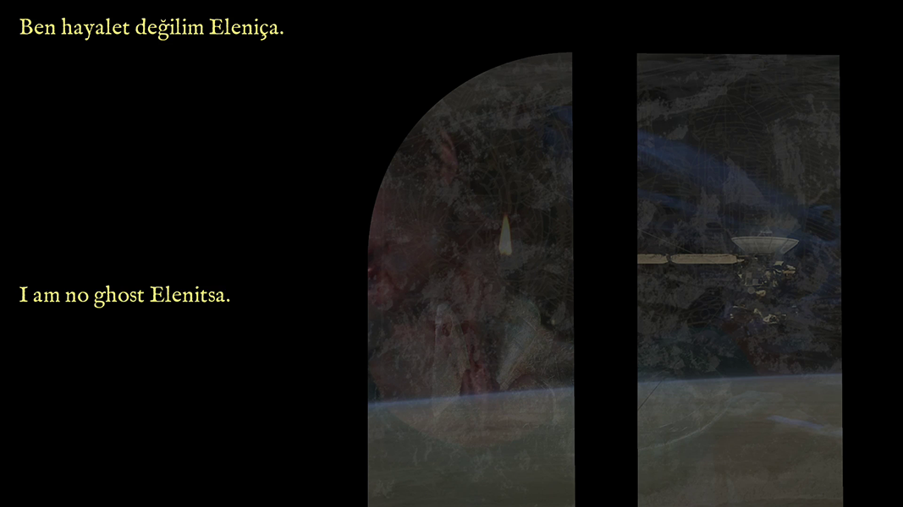
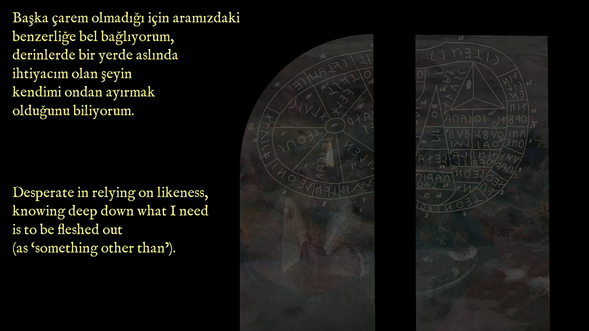
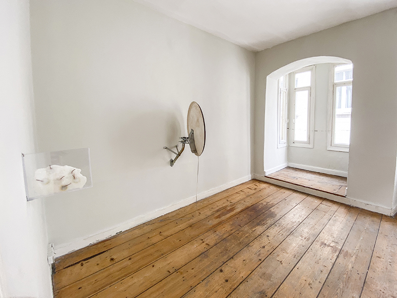
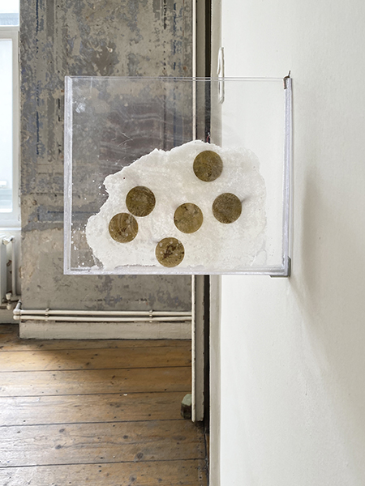
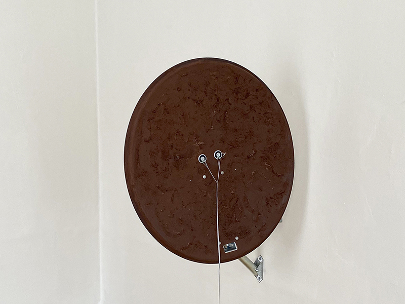
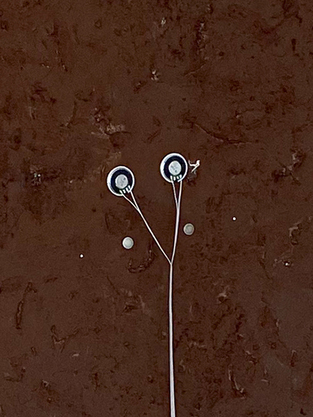
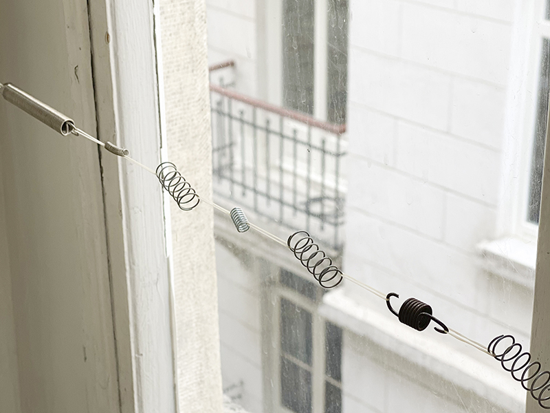
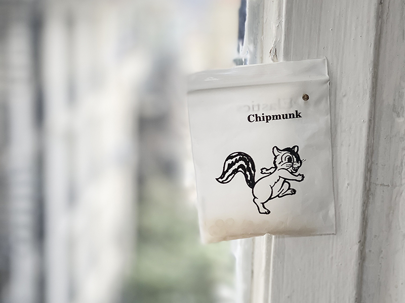
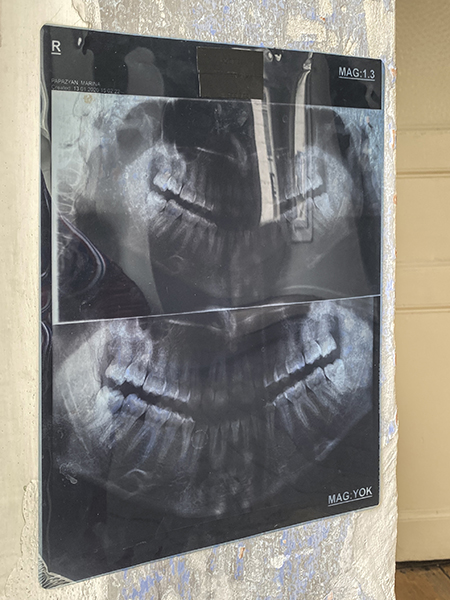
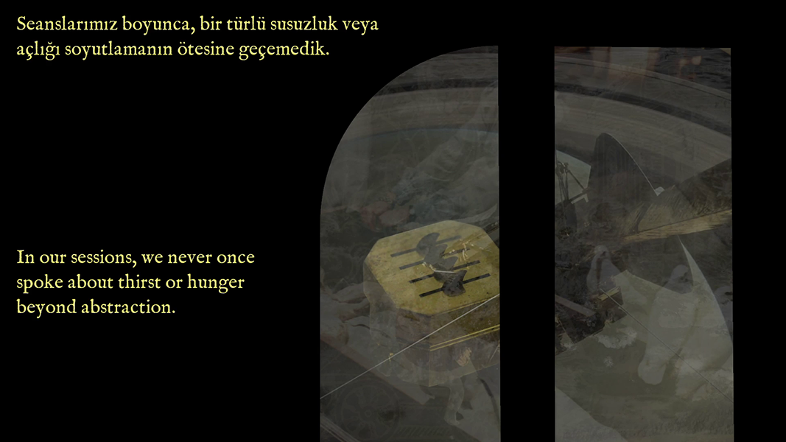
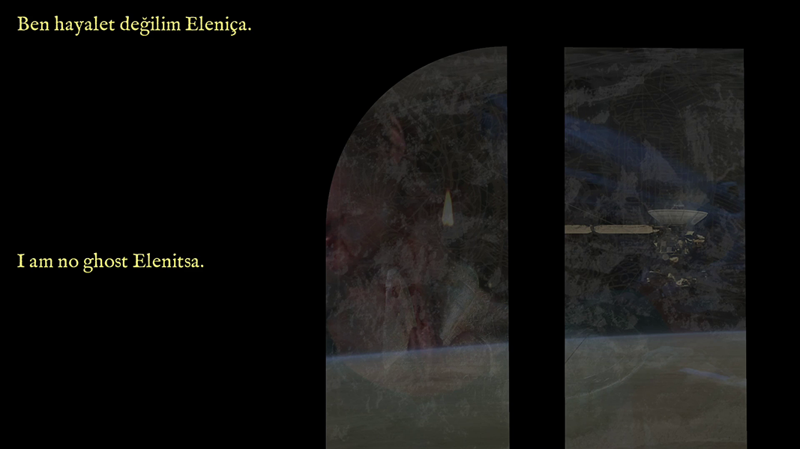
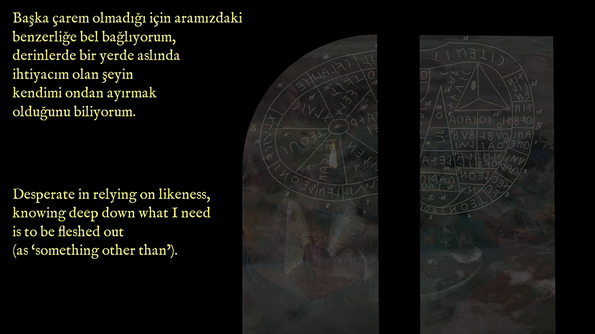
solo exhibition at poşe
(from left to right)
1 poster, designed by Mehmet Süzgün
2
4 exhibition view
5
6
8
10
11
P: Marina Papazyan's first solo exhibition, Haemoglobins & Ants, opens on April 16 at poşe's Karaköy venue. The exhibition, which brings together Papazyan’s recent works, can be visited between 13:00 - 19:00 through Mondays to Fridays until May 14, 2021.
M: Haemoglobins & Ants, grew out of a text I wrote about a vampire named Mircalla haunting life, and the materials, chemical reactions and fragments of sound orbiting this particular narrative. Lately I’ve been indulging in “the vampire”, as a form of failed death and embodied resentment as opposed to the melancholic immateriality of the ghost. Bridging Mircalla by alternating between their name and our shared initial M, I’ve entangled myself in their story. From the moment of resurrection to the therapy room, M is a conflicted character who has a claim on the world of the living. With a newly acquired worldsense comes the first-person singular, who is granted not only the right to their own sense of reality but an erotics of it too.